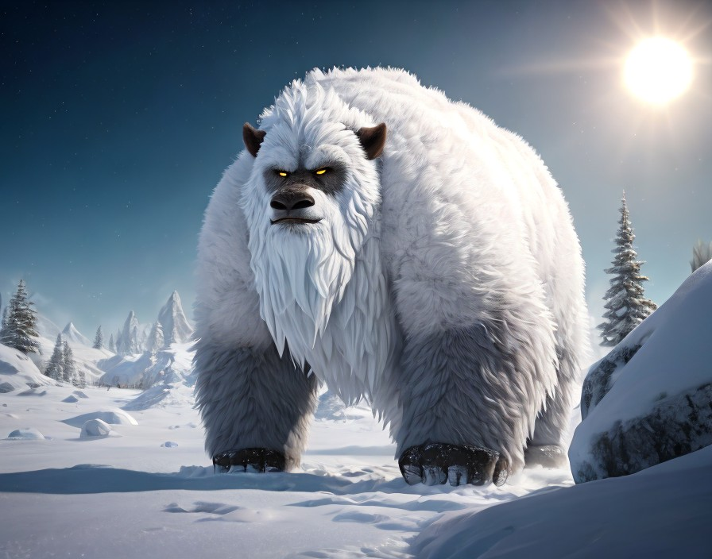
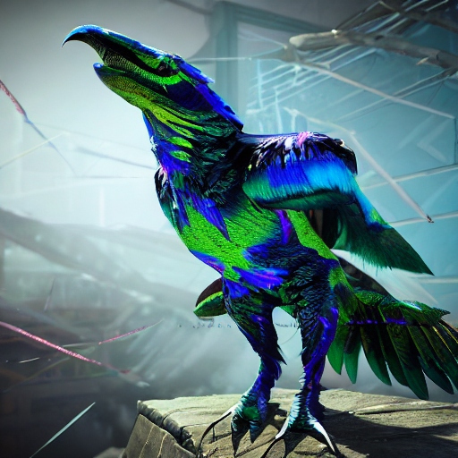
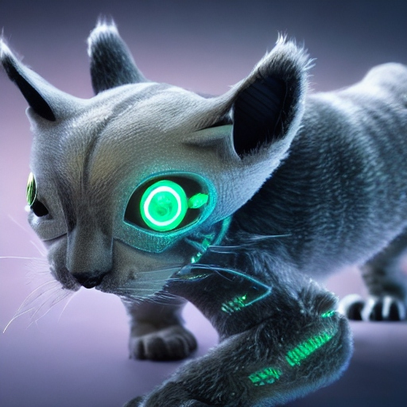

Fauna

Description: These agile reptilian creatures navigate the sandy terrain with ease, using their long, muscular legs. They primarily feed on small insects and scavenge for plant matter. Sandstriders are known for their solitary behavior and can live up to 30 Earth years.
Planet: Aurelia

Description: These ethereal insects are known for their iridescent wings that shimmer in the sunlight. They feed on nectar from various flowers and exhibit intricate flight patterns. Their lifespan is around 6 Earth years.
Planet: Viridia Prime

Description: These sleek, predatory creatures glide effortlessly through the waters of Cerulea, preying on smaller fish and crustaceans. They are highly intelligent and exhibit cooperative hunting behavior. Aqualisks have a lifespan of around 30 Earth years.
Planet: Cerulea

Description: These massive, fur-covered creatures roam the frozen wastelands of Eclipta in search of prey. They are apex predators, relying on their keen senses and brute strength to hunt. Frostbound Yetis can live for up to 50 Earth years.","Eclipta",7,"4_fauna_frostboundYeti.png"
5,"Vorgrak Beetle","Vorgrak Beetles are nocturnal hunters, preying on smaller insects and scavenging plant matter. They communicate through clicks and chirps, often forming intricate patterns of light to attract mates. They are found deep within the dense jungles of Chalupax, particularly near sources of water where vegetation is abundant. They are omnivorous, feeding on both plant matter and smaller creatures. They are preyed upon by larger predators such as the Shadowfang Serpent. They live approximately 10-15 standard Chalupaxian years.
Planet: Chalupax

Description: Vorgrak Beetles are nocturnal hunters, preying on smaller insects and scavenging plant matter. They communicate through clicks and chirps, often forming intricate patterns of light to attract mates. They are found deep within the dense jungles of Chalupax, particularly near sources of water where vegetation is abundant. They are omnivorous, feeding on both plant matter and smaller creatures. They are preyed upon by larger predators such as the Shadowfang Serpent. They live approximately 10-15 standard Chalupaxian years.
Planet: chalupax

Description: The Shadowfang Serpent is a sleek, serpentine predator with iridescent scales that shimmer in the sunlight. Its most notable feature is its retractable fangs, which inject a paralyzing venom into its prey.They are stealthy and elusive, the Shadowfang Serpent hunts by ambushing its prey from the shadows. It possesses remarkable agility, allowing it to navigate the dense foliage of Chalupax with ease.They prefers to inhabit the darker regions of the jungle where it can blend seamlessly with its surroundings. They are carnivorous, feeding primarily on small creatures such as Vorgrak Beetles and other reptiles. Adult Shadowfang Serpents have few natural predators, though they may occasionally fall prey to larger predators or rival serpents.They live up to 25 standard Chalupaxian years.
Planet: chalupax

Description: The Shriekwing Bat is a small, nocturnal mammal with leathery wings and vibrant bioluminescent markings. It emits high-pitched shrieks to navigate and communicate with others of its kind. Shriekwing Bats are highly social creatures, often forming large colonies within dark, cavernous environments. They primarily feed on insects and small reptiles. They prefer to inhabit the expansive cave systems that riddle Tozathadax's rocky terrain, where they roost upside down from stalactites.They are insectivorous, with a preference for large beetles and flying insects. Shriekwing Bats are preyed upon by aerial predators such as the Razorbeak Raptor.They typically live for 15-20 standard Tozathadaxian years.
Planet: Tozethadax

Description: The Razorbeak Raptor is a fearsome avian predator with razor-sharp talons and a serrated beak. Its feathers are iridescent, shimmering with hues of blue and green. They are highly territorial and aggressive, Razorbeak Raptors are skilled hunters that stalk their prey from above before swooping down to deliver a swift, fatal strike.They roam the open skies and rocky cliffs of Tozathadax, often nesting in high-altitude crevices and caves. They are carnivorous, preying on small creatures such as Shriekwing Bats and other avian species. Adult Razorbeak Raptors have few natural predators due to their formidable size and agility. They can live for up to 25 standard Tozathadaxian years.
Planet: Tozethadax

Description: The Sapphire Swimmer is a sleek, dolphin-like creature with iridescent blue scales and long, graceful fins. It possesses bioluminescent patterns along its body that glow in the dark depths of Aquaria's oceans.They are highly intelligent and social, Sapphire Swimmers travel in pods, communicating through a complex system of clicks and whistles. They are known for their playful nature, often engaging in acrobatic displays. They inhabit the expansive oceanic depths of Aquaria, where they can be found swimming in the vicinity of coral reefs and underwater caverns. They are carnivorous, feeding on small fish, squid, and crustaceans. Despite their agility and speed, Sapphire Swimmers are occasionally targeted by larger predators such as the Leviathan Serpent. They can live for up to 50 standard Aquarian years.
Planet: Aquaria

Description: The Leviathan Serpent is a colossal, serpentine predator with scales that shimmer like liquid silver. Its elongated body stretches for hundreds of meters, making it one of the largest creatures in Aquaria's oceans. They are solitary and enigmatic, the Leviathan Serpent prowls the depths in search of prey, its movements almost ghost-like despite its immense size. It is known to emit low-frequency pulses to communicate and navigate. They roam the deepest trenches and abyssal plains of Aquaria, where they hunt with unrivaled stealth and precision. They are carnivorous, preying on large marine mammals, including Sapphire Swimmers, and other colossal creatures that inhabit the ocean depths. Adult Leviathan Serpents have no natural predators due to their size and formidable abilities. They are estimated to live for several hundred standard Aquarian years, although exact lifespan remains a mystery.
Planet: Aquaria

Description: The Nova Prowler is a sleek, feline-like mammal with a fur coat that shimmers with metallic hues under sunlight. It has sharp claws and keen senses, making it an agile predator. Nova Prowlers are solitary hunters, stalking their prey with stealth and precision. They are most active during the twilight hours, using their excellent night vision to navigate the dense forests and grasslands. They prefer to inhabit the wooded areas and grassy plains of Terra Nova, where they hunt small prey and seek refuge in rocky crevices or tree hollows. They are carnivorous, preying on small mammals, reptiles, and birds. Adult Nova Prowlers have few natural predators, though they may occasionally compete with other predators for territory and resources. They typically live for 15-20 standard Terran years.
Planet: Terra Nova

Description: The Terra Stalker is a formidable predator resembling a blend of wolf and reptile, with a muscular build and scales that provide natural armor. It has razor-sharp teeth and powerful jaws. Terra Stalkers are pack hunters, coordinating with their packmates to bring down larger prey. They are highly intelligent and communicate through a series of growls, barks, and body language. They roam the savannahs and foothills of Terra Nova in search of prey, often establishing dens in rocky outcrops or burrows dug into the earth. They are carnivorous, preying on herbivorous mammals such as grazing herds and smaller predators like the Nova Prowler. While adult Terra Stalkers are apex predators, their young may fall prey to larger predators or rival packs. They can live for up to 25 standard Terran years.
Planet: Aquaria